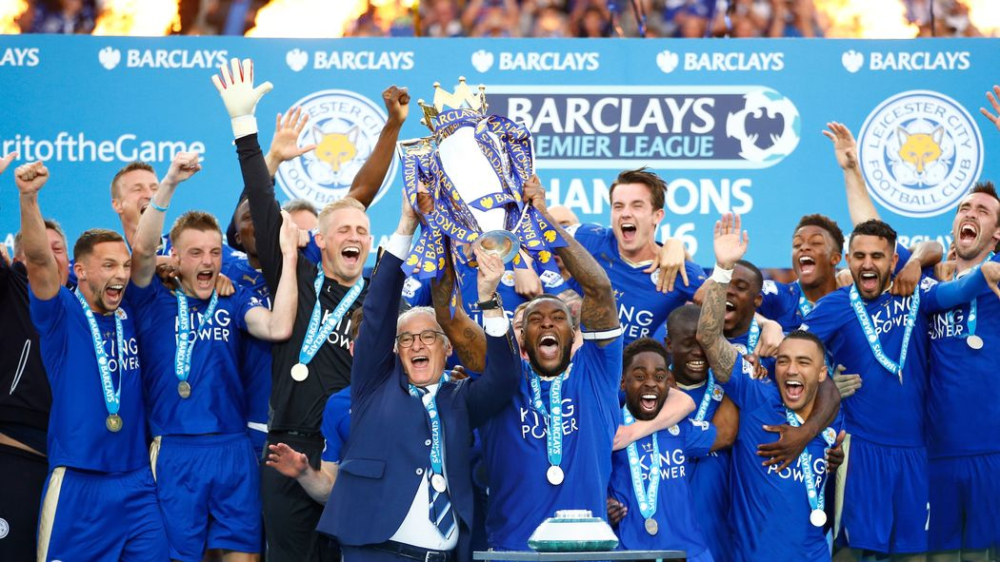
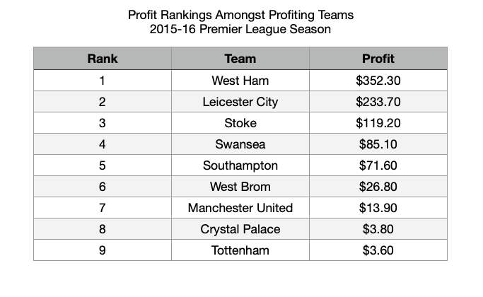

By: Aurelio Barrios
Previous to the 2015-16 Premier League season firing up Leicester City had a 5000/1 chance of winning the Premier League. Those predicted to actually have a chance of winning the Premier League were what are known in England as the “top six”. The top six - formed by Arsenal, Chelsea, Liverpool, Manchester City, Manchester United and Tottenham - are the six biggest clubs in England. Chelsea F.C. the winner of the 2014-15 season was the favorite to win the league with 3/2 odds, followed by the evergrowing Manchester City who had 5/2 odds. We analyze the profits of bets made during this unique season.
When it comes to betting it is obviously about the profits. Most people are defensive when it comes to their bets choosing to bet on the secure wins most of the time. With this in mind, who are the secure bets? Well considering that in a bet you only win money if the team you bet for wins, then it would be intuitive to bet on those teams that win the most games. If a team is in a losing rut then you would most likely not bet on that team since it is more likely that the team will lose in their upcoming game.
When it comes to the Premier League the bets should be most secure within the top six. The top six are usually the teams that are the highest in the league table which means they get the better results. In the pie chart we can see that the top six makeup nearly half (roughly 44.9%) of the total wins across all teams during the 2014-15 Premier League season. What does this translate to? Profits. If we know that most of the wins that are occurring during a season are coming from the top six football clubs then if we simply bet on these clubs to win we should be “in the green” when it comes to profits.
Although our previous intuition of choosing to bet on those teams that win the most made sense, after careful analysis we learn that this is not the case. In fact if we would have followed through with this idea we would have actually lost money. We compare betting winnings across teams assuming we bet $10 for each team and each of their games, favoring the selected team to win. In the slope graph below we compare final league standings with the standings in terms of betting profits across all teams.
Under our previous intuition we would have expected the top teams to remain at the top when it came to their bet profit rankings. This is not the case. As we can see the top four teams in terms of league standings all drop off significantly when it comes to bet profit standings. We also see a climb straight to the top of the bet standings for three teams in the middle of the league rankings. Perhaps the most astonishing data point was the team Aston Villa who finished 17th in the league but finished 6th when it came to betting profits. This could be showing us how it might not be the best idea to believe that the big teams will return the profits since they are winning more. There could be more that goes into determining what brings profits.
We previously learned that profits may not rely on total number of wins. If this was the case then surely the league winner, who under definition has the most number of wins, should have also been the leader in terms of profits. We look to compare Chelsea, the leader of the league standing rankings to Swansea who is the leader of the bet winnings standings in order to really see what drives profits.
Here we compare the decimal odds for each game for both Chelsea and Swansea, what we find makes it clear as to why Swansea top the rankings for most profitable teams. What we are comparing are decimal odds. Decimal odds are odds that make it easy to calculate winnings of winning a bet. For example, during Chelsea's first game they had 1.4 decimal odds which means that if you bet $10 dollars on Chelsea winning their first game your winnings would be your bet times the decimal odds, in this case $14. Here we can see as to why Swansea lead the bet winning rankings even though Chelsea won the league. Throughout the season Swansea's decimal odds rarely drop below those of Chelseas. There are also some major peaks in Swansea's decimal odds while Chesleas rarely get past the 3 point mark. These peaks are potentials for high profits if Swansea were to win the games that fall on these peaks. This shows us how picking the underdog to win, when nobody expects it can lead to more profits than picking the reliable safe bet. Higher risks means higher rewards.
We learned that it is not the best idea to just bet on the teams that always win, we must hope for the upsets and root for the underdog in order to really see profit. But what of Leicester City? Coming into the 2015-16 Premier League season they were the ultimate underdog. In the end they finished on top, they won the league. Looking at Leicester City’s title winning season it is a perfect combination for profit, we have an underdog that won a lot of games. We look at the profits earned for Chelsea the previous winner and Leicester City the underdog that won the title.
Looking at our data we see how despite Leicester City losing more games their profits are far greater than the profits seen during Chelsea’s title winning season. This also shows us that even throughout the entire season Chelsea the well established team doesn't amount to much profit, a few big hitting games for Leicester City amount to more profit than the combined winnings of Chelsea. We also see how the profits seen for Leicester City kind of minimize as we reach the end of the season, maybe as bookmakers realized that Leicester City were no longer the underdogs. Here we see how underdogs that win games can be big money makers.
Leicester City have shown us how being a winning underdog can lead to some serious profits. We also learned that it is best to count on the underdogs to make you money rather than relying on the established winners. Leicester City were severely overlooked and they overachieved. But perhaps another team that was overlooked even more is our trojan horse West Ham United. Despite finishing 7th in the league West Ham United topped the bet profit rankings in a season where a team that had 5000/1 chance of winning the league actually won the league. Despite Leicester City winning the league there was still a team that profitted more. This comes to show that there is always an underdog that is waiting to flourish. We will leave it for future explorations to help us determine how to spot underdogs in order to really capitalize on profits.
